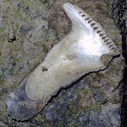
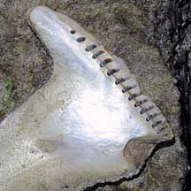
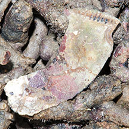
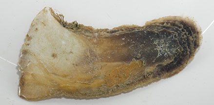
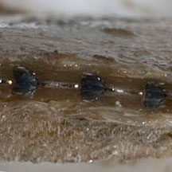
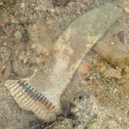

|
|
| bivalves text index | photo index |
| Phylum Mollusca > Class Bivalvia > Family Pteriidae |
| Elongated toothed oyster Isognomon isognomum Family Pteriidae updated May 2020 Where seen? Like tongue depressors, these narrow long clams are sometimes seen stuck upright to rocks and coral rubble near reefs. Features: 10-15cm. The two-part shell is thick, flat and usually long and narrow, sometimes with a T-shape near the bottom where it is stuck to a hard surface with byssus threads. Usually dark, the shell is often coated with encrusting organisms. Often found in groups of a few individuals stuck in crevices. Sometimes confused with Hammer oysters that have a similar shape and also stuck upright in crevices. It is difficult to tell them apart without ripping them out of their hiding place and looking at the inside of the shell. On the inside, Elonged toothed oysters have a long row of notches at the hinge, and a large area of mother-of-pearl relative to the shell length. |
 A large area of mother-of-pearl relative to shell length. Tanah Merah, Dec 09 |
 A long row of notches at the hinge. |
 Terumbu Semakau, Nov 12 |
 Beting Bemban Besar, Aug 12 |
 A long row of notches at the hinge. |
*Species are difficult to positively identify without close examination.
On this website, they are grouped by external features for convenience of display.
| Elongated toothed oysters on Singapore shores |
On wildsingapore
flickr
|
| Other sightings on Singapore shores |
 Terumbu Raya, Aug 21 Photo shared by Vincent Choo on facebook. |
|
Links
References
|